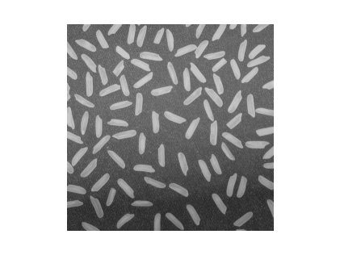
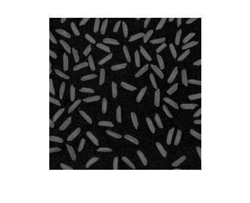
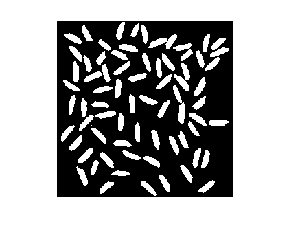
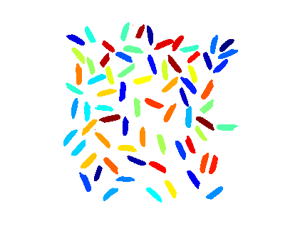
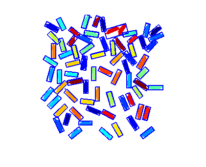

Contents
function demoImOrientedBox(varargin)
%DEMOIMORIENTEDBOX Demo file for using function imOrientedBox % % Syntax % demoImOrientedBox % The demo runs automatically. % % Example % demoImOrientedBox % % See also % % % ------ % Author: David Legland % e-mail: david.legland@grignon.inra.fr % Created: 2011-05-09, using Matlab 7.9.0.529 (R2009b) % Copyright 2011 INRA - Cepia Software Platform.
Image segmentation
% read image img = imread('rice.png'); figure(1); clf; imshow(img); % compute background bg = imopen(img, ones(30, 30)); img2 = img - bg; figure(2); clf; imshow(img2); % display histogram, to identify the threshold value figure(3); clf; imHistogram(img2); % image binarisation, and remove particles touching border bin = img2>50; bin = imclearborder(bin, 4); imshow(bin); % compute image labels, using minimal connectivity lbl = bwlabel(bin, 4); nLabels = max(lbl(:)); % display label image rgb = label2rgb(lbl, jet(nLabels), 'w', 'shuffle'); figure(4); clf; imshow(rgb);   
Compute enclosing oriented boxes
% call the function boxes = imOrientedBox(lbl); % display result hold on; drawOrientedBox(boxes, 'linewidth', 2);